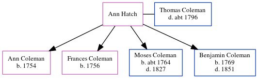

Ann Coleman (née Hatch)
[ Home ] | [ Calendar ] | [ Surnames Index ] | [ Census Index ] | [ Family History ]Ann Hatch was the 5 times great-grandmother of Nigel Horne and married Thomas Coleman (with whom she had 4 children: Ann, Frances, Moses and Benjamin) in Brabourne, Kent, England on Apr 14, 17511.
Children
- Ann was born in 1754
- Frances was born in 1756
- Moses was born c. 1764
- Benjamin was born in 1769
Citations
- Public Member Trees Online publication - Provo, UT, USA: The Generations Network, Inc., 2006.Original data - Family trees submitted by Ancestry members.Original data: Family trees submitted by Ancestry members.
Family Tree
Generated by ged2site. Last updated on Jun 11, 2024